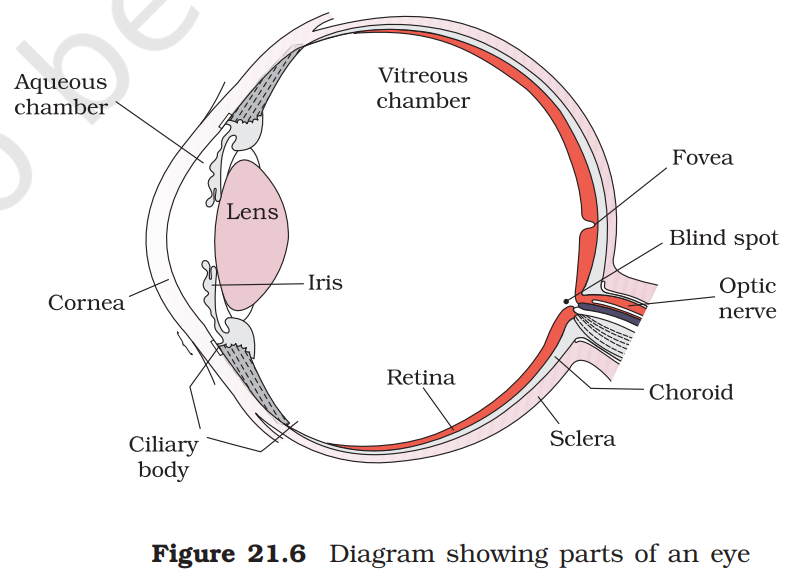

As you know, the functions of the organs/organ systems in our body must be coordinated to maintain homeostasis. Coordination is the process through which two or more organs interact and complement the functions of one another. For example, when we do physical exercises, the energy demand is increased for maintaining an increased muscular activity. The supply of oxygen is also increased. The increased supply of oxygen necessitates an increase in the rate of respiration, heart beat and increased blood flow via blood vessels. When physical exercise is stopped, the activities of nerves, lungs, heart and kidney gradually return to their normal conditions. Thus, the functions of muscles, lungs, heart, blood vessels, kidney and other organs are coordinated while performing physical exercises. In our body the neural system and the endocrine system jointly coordinate and integrate all the activities of the organs so that they function in a synchronised fashion.
The neural system provides an organised network of point-to-point connections for a quick coordination. The endocrine system provides chemical integration through hormones. In this chapter, you will learn about the neural system of human, mechanisms of neural coordination like transmission of nerve impulse, impulse conduction across a synapse and the physiology of reflex action.
Neural System
The neural system of all animals is composed of highly specialised cells called neurons which can detect, receive and transmit different kinds of stimuli.
The neural organisation is very simple in lower invertebrates. For example, in Hydra it is composed of a network of neurons. The neural system is better organised in insects, where a brain is present along with a number of ganglia and neural tissues. The vertebrates have a more developed neural system.
Human Neural System
The human neural system is divided into two parts :
-
the central neural system(CNS)
-
the peripheral neural system(PNS)
The CNS includes the brain and the spinal cord and is the site of information processing and control. The PNS comprises of all the nerves of the body associated with the CNS (brain and spinal cord). The nerve fibres of the PNS are of two types:
-
afferent fibres
-
efferent fibres
The afferent nerve fibres transmit impulses from tissues/organs to the CNS and the efferent fibres transmit regulatory impulses from the CNS to the concerned peripheral tissues/organs.
The PNS is divided into two divisions called somatic neural system and autonomic neural system. The somatic neural system relays impulses from the CNS to skeletal muscles while the autonomic neural system transmits impulses from the CNS to the involuntary organs and smooth muscles of the body. The autonomic neural system is further classified into sympathetic neural system and parasympathetic neural system.
Visceral nervous system is the part of the peripheral nervous system that comprises the whole complex of nerves, fibres, ganglia, and plexuses by which impulses travel from the central nervous system to the viscera and from the viscera to the central nervous system.
Neuron as Structural and Functional Unit of Neural System
A neuron is a microscopic structure composed of three major parts, namely, cell body, dendrites and axon. The cell body contains cytoplasm with typical cell organelles and certain granular bodies called Nissl’s granules. Short fibres which branch repeatedly and project out of the cell body also contain Nissl’s granules and are called dendrites. These fibres transmit impulses towards the cell body. The axon is a long fibre, the distal end of which is branched. Each branch terminates as a bulb-like structure called synaptic knob which possess synaptic vesicles containing chemicals called neurotransmitters. The axons transmit nerve impulses away from the cell body to a synapse or to a neuro-muscular junction. Based on the number of axon and dendrites, the neurons are divided into three types, i.e., multipolar(with one axon and two or more dendrites; found in the cerebral cortex), bipolar(with one axon and one dendrite, found in the retina of eye) and unipolar(cell body with one axon only; found usually in the embryonic stage). There are two types of axons, namely, myelinated and non myelinated. The myelinated nerve fibres are enveloped with Schwann cells, which form a myelin sheath around the axon. The gaps between two adjacent myelin sheaths are called nodes of Ranvier. Myelinated nerve fibres are found in spinal and cranial nerves. Unmyelinated nerve fibre is enclosed by a Schwann cell that does not form a myelin sheath around the axon, and is commonly foun
Generation and Conduction of Nerve Impulse
Neurons are excitable cells because their membranes are in a polarised state. Do you know why the membrane of a neuron is polarised? Different types of ion channels are present on the neural membrane. These ion channels are selectively permeable to different ions. When a neuron is not conducting any impulse, i.e., resting, the axonal membrane is comparatively more permeable to potassium ions( K^+ ) and nearly impermeable to sodium ions( Na^+ ). Similarly, the membrane is impermeable to negatively charged proteins present in the axoplasm. Consequently, the axoplasm inside the axon contains high concentration of K^+ and negatively charged proteins and low concentration of Na^+ . In contrast, the fluid outside the axon contains a low concentration of K^+ , a high concentration of Na+ and thus form a concentration gradient. These ionic gradients across the resting membrane are maintained by the active transport of ions by the sodium-potassium pump which transports 3 Na^+ outwards for 2 K^+ into the cell. As a result, the outer surface of the axonal membrane possesses a positive charge while its inner surface becomes negatively charged and therefore is polarised. The electrical potential difference across the resting plasma membrane is called as the resting potential.
You might be curious to know about the mechanisms of generation of nerve impulse and its conduction along an axon. When a stimulus is applied at a site on the polarised membrane, the membrane at the site A becomes freely permeable to Na^+ . This leads to a rapid influx of Na^+ followed by the reversal of the polarity at that site, i.e., the outer surface of the membrane becomes negatively charged and the inner side becomes positively charged. The polarity of the membrane at the site A is thus reversed and hence depolarised. The electrical potential difference across the plasma membrane at the site A is called the action potential, which is in fact termed as a nerve impulse. At sites immediately ahead, the axon(e.g., site B) membrane has a positive charge on the outer surface and a negative charge on its inner surface. As a result, a current flows on the inner surface from site A to site B. On the outer surface current flows from site B to site A to complete the circuit of current flow. Hence, the polarity at the site is reversed, and an action potential is generated at site B. Thus, the impulse(action potential) generated at site A arrives at site B. The sequence is repeated along the length of the axon and consequently the impulse is conducted. The rise in the stimulus-induced permeability to Na^+ is extremely short lived. It is quickly followed by a rise in permeability to K^+ . Within a fraction of a second, K^+ diffuses outside the membrane and restores the resting potential of the membrane at the site of excitation and the fibre becomes once more responsive to further stimulation.
Transmission of Impulses
A nerve impulse is transmitted from one neuron to another through junctions called synapses. A synapse is formed by the membranes of a pre-synaptic neuron and a post-synaptic neuron, which may or may not be separated by a gap called synaptic cleft. There are two types of synapses, namely, electrical synapses and chemical synapses. At electrical synapses, the membranes of pre- and post-synaptic neurons are in very close proximity. Electrical current can flow directly from one neuron into the other across these synapses. Transmission of an impulse across electrical synapses is very similar to impulse conduction along a single axon. Impulse transmission across an electrical synapse is always faster than that across a chemical synapse. Electrical synapses are rare in our system.
At a chemical synapse, the membranes of the pre- and post-synaptic neurons are separated by a fluid-filled space called synaptic cleft. Do you know how the pre-synaptic neuron transmits an impulse(action potential) across the synaptic cleft to the post-synaptic neuron? Chemicals called neurotransmitters are involved in the transmission of impulses at these synapses. The axon terminals contain vesicles filled with these neurotransmitters. When an impulse(action potential) arrives at the axon terminal, it stimulates the movement of the synaptic vesicles towards the membrane where they fuse with the plasma membrane and release their neurotransmitters in the synaptic cleft. The released neurotransmitters bind to their specific receptors, present on the post-synaptic membrane. This binding opens ion channels allowing the entry of ions which can generate a new potential in the post-synaptic neuron. The new potential developed may be either excitatory or inhibitory.
Central Neural System
The brain is the central information processing organ of our body, and acts as the ‘command and control system’. It controls the voluntary movements, balance of the body, functioning of vital involuntary organs(e.g., lungs, heart, kidneys, etc.), thermoregulation, hunger and thirst, circadian (24-hour) rhythms of our body, activities of several endocrine glands and human behaviour. It is also the site for processing of vision, hearing, speech, memory, intelligence, emotions and thoughts.
The human brain is well protected by the skull. Inside the skull, the brain is covered by cranial meninges consisting of an outer layer called dura mater, a very thin middle layer called arachnoid and an inner layer(which is in contact with the brain tissue) called pia mater. The brain can be divided into three major parts: (i) forebrain, (ii) midbrain, and (iii) hindbrain.
Forebrain
The forebrain consists of cerebrum, thalamus and hypothalamus. Cerebrum forms the major part of the human brain. A deep cleft divides the cerebrum longitudinally into two halves, which are termed as the left and right cerebral hemispheres. The hemispheres are connected by a tract of nerve fibres called corpus callosum. The layer of cells which covers the cerebral hemisphere is called cerebral cortex and is thrown into prominent folds. The cerebral cortex is referred to as the grey matter due to its greyish appearance. The neuron cell bodies are concentrated here giving the colour. The cerebral cortex contains motor areas, sensory areas and large regions that are neither clearly sensory nor motor in function. These regions called as the association areas are responsible for complex functions like intersensory associations, memory and communication. Fibres of the tracts are covered with the myelin sheath, which constitute the inner part of cerebral hemisphere. They give an opaque white appearance to the layer and, hence, is called the white matter. The cerebrum wraps around a structure called thalamus, which is a major coordinating centre for sensory and motor signaling. Another very important part of the brain called hypothalamus lies at the base of the thalamus. The hypothalamus contains a number of centres which control body temperature, urge for eating and drinking. It also contains several groups of neurosecretory cells, which secrete hormones called hypothalamic hormones. The inner parts of cerebral hemispheres and a group of associated deep structures like amygdala, hippocampus, etc., form a complex structure called the limbic lobe or limbic system. Along with the hypothalamus, it is involved in the regulation of sexual behaviour, expression of emotional reactions(e.g., excitement, pleasure, rage and fear), and motivation.
Midbrain
The midbrain is located between the thalamus/hypothalamus of the forebrain and pons of the hindbrain. A canal called the cerebral aqueduct passess through the midbrain. The dorsal portion of the midbrain consists mainly of four round swellings (lobes)called corpora quadrigemina.
Hindbrain
The hindbrain comprises pons, cerebellum and medulla(also called the medulla oblongata). Pons consists of fibre tracts that interconnect different regions of the brain. Cerebellum has very convoluted surface in order to provide the additional space for many more neurons. The medulla of the brain is connected to the spinal cord. The medulla contains centres which control respiration, cardiovascular reflexes and gastric secretions.
Three major regions make up the brain stem; mid brain, pons and medulla oblongata. Brain stem forms the connections between the brain and spinal cord.
Reflex Action and Reflex Arc
You must have experienced a sudden withdrawal of a body part which comes in contact with objects that are extremely hot, cold pointed or animals that are scary or poisonous. The entire process of response to a peripheral nervous stimulation, that occurs involuntarily, i.e., without conscious effort or thought and requires the involvment of a part of the central nervous system is called a reflex action. The reflex pathway comprises at least one afferent neuron (receptor) and one efferent (effector or excitor) neuron appropriately arranged in a series. The afferent neuron receives signal from a sensory organ and transmits the impulse via a dorsal nerve root into the CNS(at the level of spinal cord). The efferent nueuron then carries signals from CNS to the effector. The stimulus and response thus forms a reflex arc as shown below in the knee jerk reflex. You should carefully study to understand the mechanism of a knee jerk reflex.
Sensory Reception and Processing
Have you ever thought how do you feel the climatic changes in the environment? How do you see an object and its colour? How do you hear a sound? The sensory organs detect all types of changes in the environment and send appropriate signals to the CNS, where all the inputs are processed and analysed. Signals are then sent to different parts/ centres of the brain. This is how you can sense changes in the environment.
SENSE ORGANS
We smell things by our nose, taste by tongue, hear by ear and see objects by eyes.
The nose contains mucus-coated receptors which are specialised for receiving the sense of smell and called olfactory receptors. These are made up of olfactory epithelium that consists of three kinds of cells. The neurons of the olfactory epithelium extend from the outside environment directly into a pair of broad bean-sized organs, called olfactory bulb, which are extensions of the brain’s limbic system.
Both nose and tongue detect dissolved chemicals. The chemical senses of gustation (taste) and olfactory (smell) are functionally similar and interrelated. The tongue detects tastes through taste buds, containing gustatory receptors. With each taste of food or sip of drink, the brain integrates the differential input from the taste buds and a complex flavour is perceived.
In the following sections, you will be introduced to the structure and functioning of the eye (sensory organ for vision) and the ear (sensory organ for hearing).
Eye
Our paired eyes are located in sockets of the skull called orbits. A brief account of structure and functions of the human eye is given in the following sections.
Parts of an eye

The adult human eye ball is nearly a spherical structure. The wall of the eye ball is composed of three layers. The external layer is composed of a dense connective tissue and is called the sclera. The anterior portion of this layer is called the cornea. The middle layer, choroid, contains many blood vessels and looks bluish in colour. The choroid layer is thin over the posterior two-thirds of the eye ball, but it becomes thick in the anterior part to form the ciliary body. The ciliary body itself continues forward to form a pigmented and opaque structure called the iris which is the visible coloured portion of the eye. The eye ball contains a transparent crystalline lens which is held in place by ligaments attached to the ciliary body. In front of the lens, the aperture surrounded by the iris is called the pupil. The diameter of the pupil is regulated by the muscle fibres of iris.
The inner layer is the retina and it contains three layers of neural cells - from inside to outside – ganglion cells, bipolar cells and photoreceptor cells. There are two types of photoreceptor cells, namely, rods and cones. These cells contain the light-sensitive proteins called the photopigments. The daylight(photopic) vision and colour vision are functions of cones and the twilight(scotopic) vision is the function of the rods. The rods contain a purplish-red protein called the rhodopsin or visual purple, which contains a derivative of Vitamin A. In the human eye, there are three types of cones which possess their own characteristic photopigments that respond to red, green and blue lights. The sensations of different colours are produced by various combinations of these cones and their photopigments. When these cones are stimulated equally, a sensation of white light is produced.
The optic nerves leave the eye and the retinal blood vessels enter it at a point medial to and slightly above the posterior pole of the eye ball. Photoreceptor cells are not present in that region and hence it is called the blind spot. At the posterior pole of the eye lateral to the blind spot, there is a yellowish pigmented spot called macula lutea with a central pit called the fovea. The fovea is a thinned-out portion of the retina where only the cones are densely packed. It is the point where the visual acuity(resolution) is the greatest.
The space between the cornea and the lens is called the aqueous chamber and contains a thin watery fluid called aqueous humor. The space between the lens and the retina is called the vitreous chamber and is filled with a transparent gel called vitreous humor.
Mechanism of Vision
The light rays in visible wavelength focussed on the retina through the cornea and lens generate potentials(impulses) in rods and cones. As mentioned earlier, the photosensitive compounds(photopigments) in the human eyes is composed of opsin(a protein) and retinal(an aldehyde of vitamin A). Light induces dissociation of the retinal from opsin resulting in changes in the structure of the opsin. This causes membrane permeability changes. As a result, potential differences are generated in the photoreceptor cells. This produces a signal that generates action potentials in the ganglion cells through the bipolar cells. These action potentials(impulses) are transmitted by the optic nerves to the visual cortex area of the brain, where the neural impulses are analysed and the image formed on the retina is recognised based on earlier memory and experience.
The Ear
The ears perform two sensory functions, hearing and maintenance of body balance. Anatomically, the ear can be divided into three major sections called the outer ear, the middle ear and the inner ear. The outer ear consists of the pinna and external auditory meatus(canal). The pinna collects the vibrations in the air which produce sound. The external auditory meatus leads inwards and extends up to the tympanic membrane(the ear drum). There are very fine hairs and wax-secreting glands in the skin of the pinna and the meatus. The tympanic membrane is composed of connective tissues covered with skin outside and with mucus membrane inside. The middle ear contains three ossicles called malleus, incus and stapes which are attached to one another in a chain-like fashion. The malleus is attached to the tympanic membrane and the stapes is attached to the oval window of the cochlea. The ear ossicles increase the efficiency of transmission of sound waves to the inner ear. An Eustachian tube connects the middle ear cavity with the pharynx. The Eustachian tube helps in equalising the pressures on either sides of the ear drum.
The fluid-filled inner ear called labyrinth consists of two parts, the bony and the membranous labyrinths. The bony labyrinth is a series of channels. Inside these channels lies the membranous labyrinth, which is surrounded by a fluid called perilymph. The membranous labyrinth is filled with a fluid called endolymph. The coiled portion of the labyrinth is called cochlea. The membranes constituting cochlea, the reissner’s and basilar, divide the surounding perilymph filled bony labyrinth into an upper scala vestibuli and a lower scala tympani. The space within cochlea called scala media is filled with endolymph. At the base of the cochlea, the scala vestibuli ends at the oval window, while the scala tympani terminates at the round window which opens to the middle ear.
The organ of corti is a structure located on the basilar membrane which contains hair cells that act as auditory receptors. The hair cells are present in rows on the internal side of the organ of corti. The basal end of the hair cell is in close contact with the afferent nerve fibres. A large number of processes called stereo cilia are projected from the apical part of each hair cell. Above the rows of the hair cells is a thin elastic membrane called tectorial membrane.
The inner ear also contains a complex system called vestibular apparatus, located above the cochlea. The vestibular apparatus is composed of three semi-circular canals and the otolith(macula is the sensory part of saccule and utricle). Each semi-circular canal lies in a different plane at right angles to each other. The membranous canals are suspended in the perilymph of the bony canals. The base of canals is swollen and is called ampulla, which contains a projecting ridge called crista ampullaris which has hair cells. The saccule and utricle contain a projecting ridge called macula. The crista and macula are the specific receptors of the vestibular apparatus responsible for maintenance of balance of the body and posture.
Mechanism of Hearing
How does ear convert sound waves into neural impulses, which are sensed and processed by the brain enabling us to recognise a sound? The external ear receives sound waves and directs them to the ear drum. The ear drum vibrates in response to the sound waves and these vibrations are transmitted through the ear ossicles(malleus, incus and stapes) to the oval window. The vibrations are passed through the oval window on to the fluid of the cochlea, where they generate waves in the lymphs. The waves in the lymphs induce a ripple in the basilar membrane. These movements of the basilar membrane bend the hair cells, pressing them against the tectorial membrane. As a result, nerve impulses are generated in the associated afferent neurons. These impulses are transmitted by the afferent fibres via auditory nerves to the auditory cortex of the brain, where the impulses are analysed and the sound is recognised.